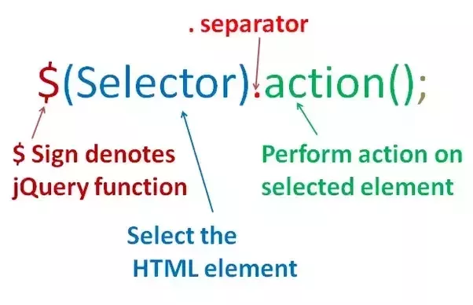
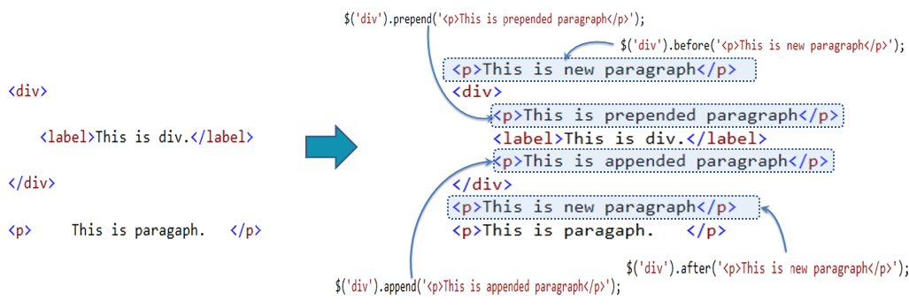
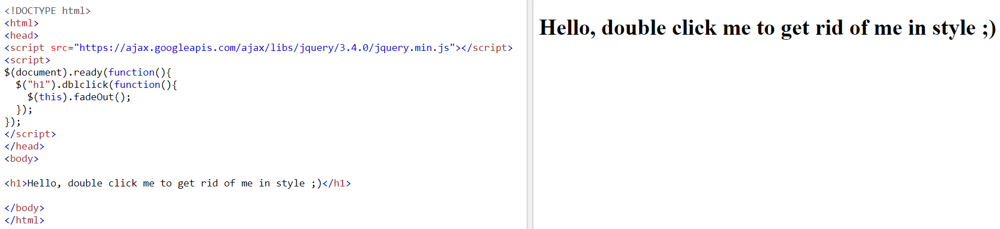
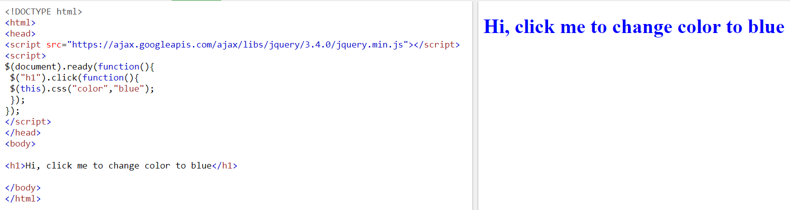
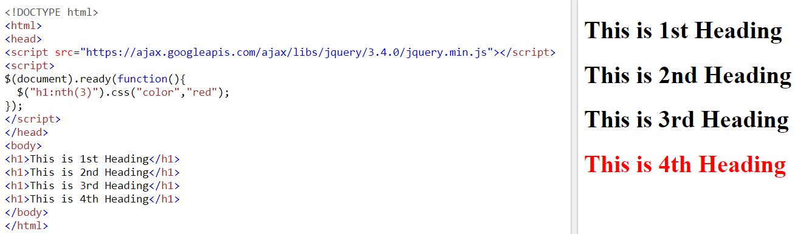
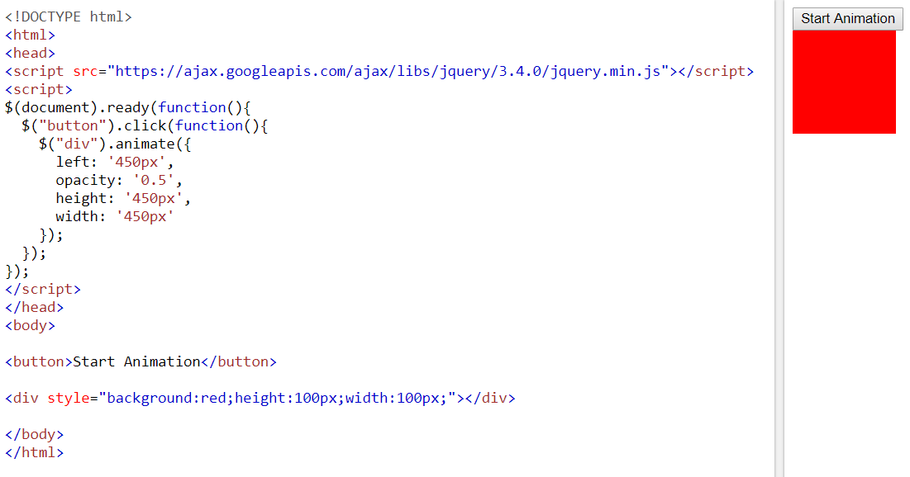

jQuery is a fast, small, and feature-rich JavaScript library. It makes things like HTML document traversal and manipulation, event handling, animation, and Ajax much simpler with an easy-to-use API that works across a multitude of browsers. With a combination of versatility and extensibility, jQuery has changed the way that millions of people write JavaScript.
Concepts- Selectors in jQuery
A jQuery Selector is a function which makes use of expressions to find out matching elements from a DOM based on the given criteria. Simply you can say, selectors are used to select one or more HTML elements using jQuery. Once an element is selected then we can perform various operations on that selected element. Selector syntax can be very simple statements that return single elements to more complicated statements that select and filter numerous elements according to areas such as their type, attributes, CSS classes, and other aspect. By unique ID:$("#uniqueIDName").action(); By tag name:$("p").action(); By class name:$(".exampleClass").action();
  - jQuery Traversing
jQuery traversing, which means "move through", are used to "find" (or select) HTML elements based on their relation to other elements. Start with one selection and move through that selection until you reach the elements you desire. The image below illustrates an HTML page as a tree (DOM tree). With jQuery traversing, you can easily move up (ancestors), down (descendants) and sideways (siblings) in the tree, starting from the selected (current) element. This movement is called traversing - or moving through - the DOM tree.

Basically you can do almost anything with jQuery to make effects and animation on your site and still be SEO friendly and cross browser compliant. But those aren’t the only benefits….“jQuery is a fast and concise JavaScript Library that simplifies HTML document traversing, event handling, animating, and Ajax interactions for rapid web development. jQuery is designed to change the way that you write JavaScript.”
- Search Engine Optimized:
- Save Time:
- Plug-ins:
- Help?:
- Cross Browser Friendly:
- Mobile Devices:
- Wow Factor:
While search engines are getting better at being able to read content within some Flash, everything within jQuery is setup as text. This means it is completely readable to all the search engines, exposing all your keyword rich content.
Five lines of jQuery are equivalent to 25 lines of conventional JavaScript code. This means smaller files and faster loading web pages.
There are an abundance of plug-ins on the web that make creating special effects simple and fast for web developers.
With an abundance of plug-ins comes with an abundance of help. There is a large helpful support community on the web to help you quickly remedy any bug issues.
jQuery is currently the most popular JavaScript library and works in all browsers.
jQuery is supported by any mobile device whose web browser supports JavaScript. A lot of mobile devices like iPads and iPhones don’t run Flash at all.
Web developers use jQuery to make web pages more exciting, interactive, cleaner, and more user friendly. Make your users go WOW!
One of the main disadvantages of jQuery is a large number of published versions in the short time. This means that if you are running the latest version of jQuery, you will have to host the library yourself and update it constantly.
- Increased techology stack:
- Slow down:
- Bandwitth:
- Better alternatives:
When you add a framework or toolbox to any project, you should always stop and think if it is *worth* it. You will add a dependency and future developers will need to understand it to maintain it. jQuery is going to be around for a long time, but forever? I don't think so.
It also (when used) slows the operation of some tasks - one could/can argue that some tasks are done fast (and reliable) in jQuery compared to a naive plain javascript implementation.
It takes up a (small) amount of bandwith to download for the client/user of your website.
There are many other frameworks out there, that doesn't require jQuery and if you're already using one of these, adding jQuery might be an anti-pattern or just adding extra complexity that wasn't needed.
jQuery’s API is well designed. Its functionality is so complete that the last few major releases of the library have hardly added any new methods at all. JQuery plays extremely well with other code. It doesn’t extend any built-in JavaScript objects and only adds one symbol to the global namespace. Some of the main uses of jQuery explained in detail are as below:
- Develop Ajax based applications:
- Easy integration with Visual Studio IDE:
- jQuery makes flash like animated applications:
jQuery is used to easily write client-side JavaScript to navigate and manipulate a page and make asynchronous Ajax callbacks. By using jQuery and JSON Web Services, Ajax callbacks have become standard programming practices for designing and developing web applications.
The Visual Studio provides with extensions which help in integration of jQuery libraries into.Net framework projects. This integration of JQuery libraries into.Net framework is supported by the Visual Studio 2010 version. The NuGet package extension of visual studio helps in this integration. With help of this integration visual studio’s IntelliSense feature is switched on. This feature all the jQuery methods are auto-populated and errors are displayed where the syntax is wrong.
It takes time to learn Flash and years of experience to make animations in Flash, hence hiring Flash developers is not a cheap task. With uses of jQuery, you only need knowledge of JavaScript and HTML to make animations. Also, there are tons of plugins which make this task even simpler.
- FadeOut event example
- Change CSS property example
- Selecting the nth element example
- Animation Example
This program fade out H1 with an animation effect
This program changes the color of H1 when clicked
This program selects the 4th Heading in the body and change its color
This program animates a division
